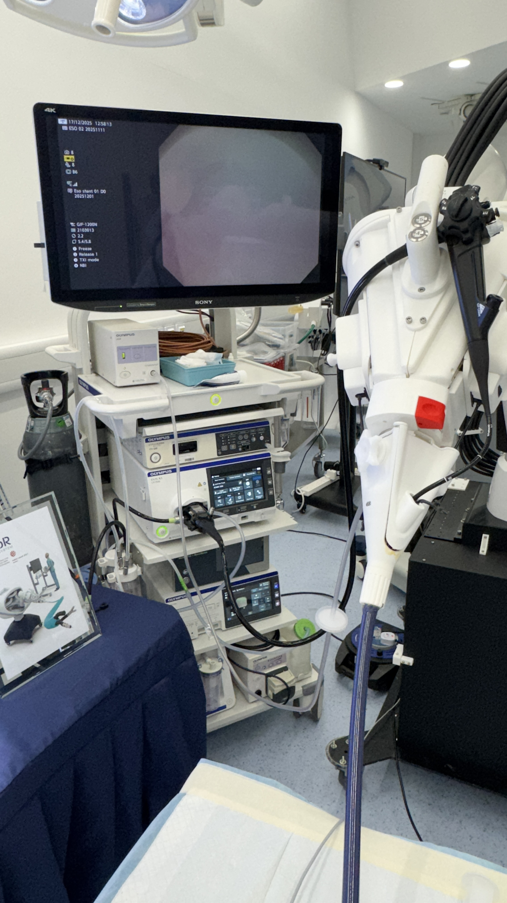
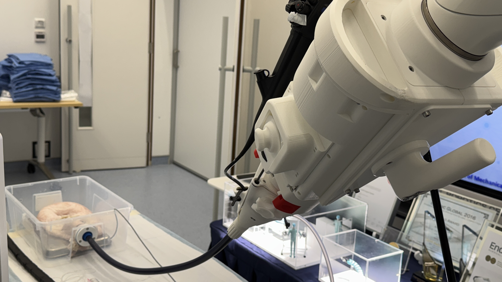
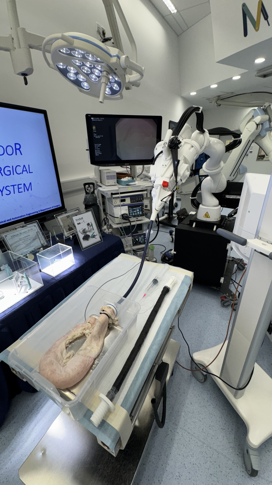
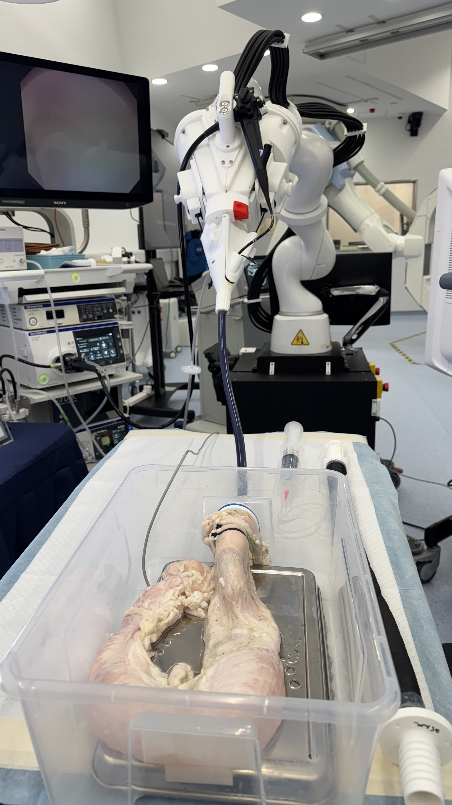
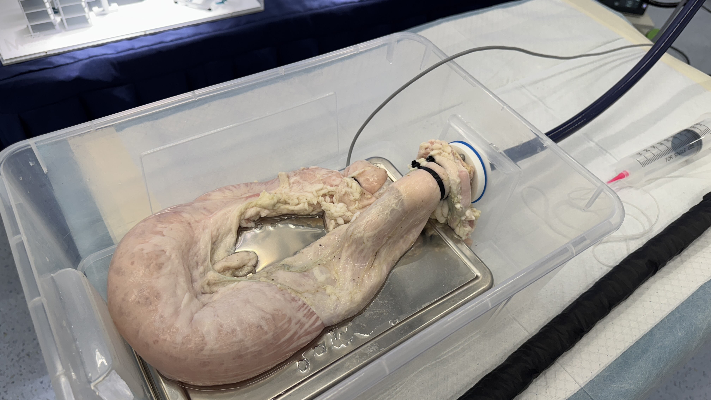
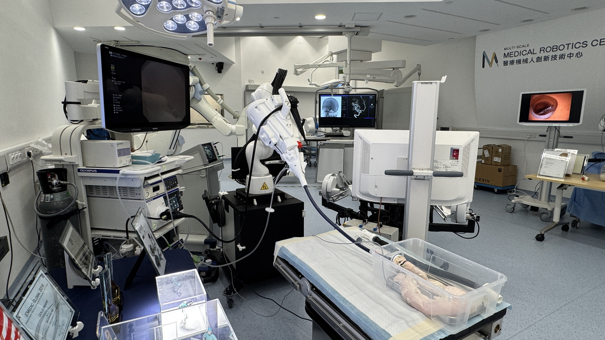

Clinical Evidence
EndoR's clinical foundation is built on peer-reviewed evidence — including the world's first robotic colorectal ESD clinical trial, conducted at Prince of Wales Hospital, CUHK.
World-First Trial
Source: Chiu PW et al. Endoscopy 2024 — World-first robotic colorectal ESD clinical trial, Prince of Wales Hospital, CUHK.
Patients Enrolled
EndoR — Chiu PW et al. Endoscopy 2024
Mean Dissection Time
EndoR — Chiu PW et al. Endoscopy 2024
Median Specimen Size
EndoR — Chiu PW et al. Endoscopy 2024
Robotic Dissection Speed
Literature mean — Kim et al. 2024
Performance Benchmark
Robotic ESD platforms achieve speeds matching expert endoscopists — and are significantly faster than novice operators (p < 0.05). Data from published literature.
Range: 10.5 — 111.7 mm²/min (median)
Limited by hand tremor, poor tissue traction, and visual obstruction — the exact challenges EndoR is designed to eliminate.
Range: 132 — 171.7 mm²/min (mean)
Fewer than 500 endoscopists globally can perform ESD at this level. The world's current gold standard — which EndoR matches.
Range: 48.2 — 234 mm²/min (mean)
Matches or exceeds expert performance. Statistical significance vs conventional: Robotic vs conventional (colorectal) p < 0.05 (Kim et al. 2024).
References: Kagaya Y et al. EIO 2025; Pu LZCT et al. JGH Open 2020; Kim J et al. Scientific Reports 2024; Kim SH et al. Gut and Liver 2024; Susuki Y et al. EIO 2020.
Published Clinical Trial
Publication
Chiu PW et al. Endoscopy 2024
Live Demonstration
The EndoR Surgical System was demonstrated live to an international audience of endoscopists at Hong Kong Live Endoscopy, December 2024 — marking a major public milestone for the platform.


Pre-clinical Validation
25+ porcine model experiments for robotic colonic ESD completed using the 2025 version of the EndoR Surgical System — validating safety, consistency and instrument performance prior to human trials.



